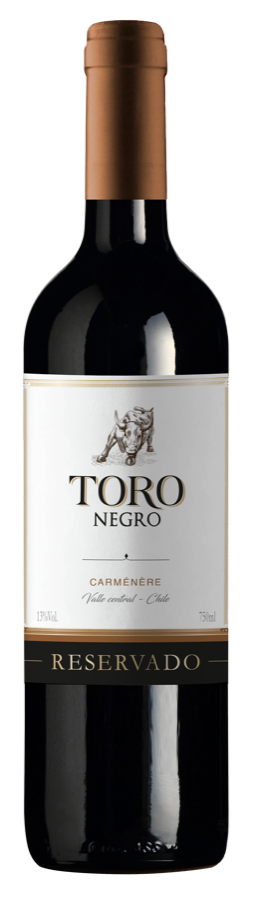

 Valle Central • Chile
Valle Central • Chile
Carménère Reservado
Vermelho cereja com notas púrpura. Aromas de frutas e especiarias pretas. Na boca taninos frutados, aveludados e equilibrados.
Harmonização: Massas com molho vermelho, queijos e carnes magras.
Serviço: 16° à 18°C • pH 3,7 • Acidez 5,6 g/l